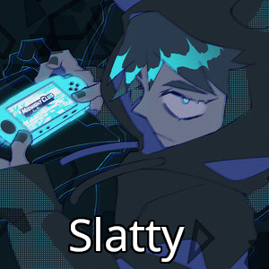
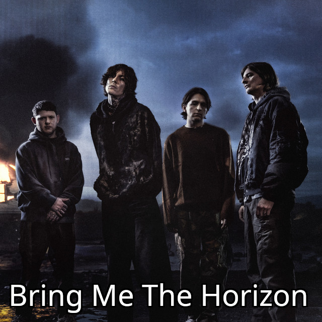

How I got into music and since when I make it
I've always listened to a lot of music, ever since I was a child. My early musical influences
were mostly what my parents were listening to, or what was playing in the radio. Eventually, I got really invested
in bands like Linkin Park or Bring Me The Horizon because my Mom was also a huge fan of them. The older I got, the more
I developed my own music taste and found more artists that are less known, with different styles and aesthetics
that I haven't really been confronted with as a child. Artists like TJ_Beastboy, Fliggsy, Yungmon, Scarlxrd and a lot of others
have led me to dig deeper into music and appreciate everything about the art itself more, and I also started to resonate
with the music I was listening to like never before. As I became more introverted and grew less fond of talking to people,
music became an even bigger part of my life, which led me to wonder how music is actually made. After some research, I
decided that I'd legally acquire an FL Studio license. While it took some time getting used to the program itself,
I eventually figured it out for the most part and started making music about 2 years ago. Sometimes I'd make 5 Songs in a week,
sometimes 1 in three months. If you're a musician yourself, you know what I'm talking about. But yea, I've been continuing to
work on music ever since then and want to get better at my craft, so that I have a chance of ultimately
making a living off of my music one day. But until then, I still got a lot of learning to do.
Anyway, here are some of my favourite musicians!

- 
- 